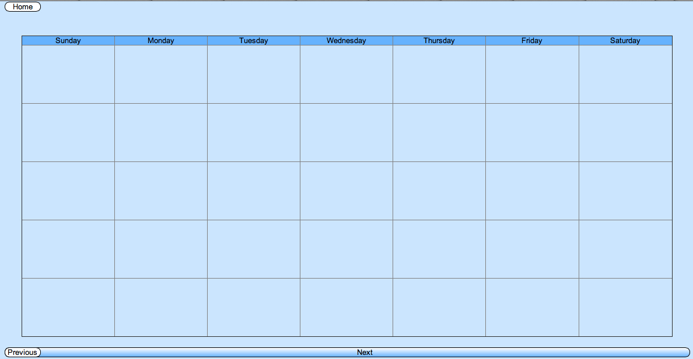
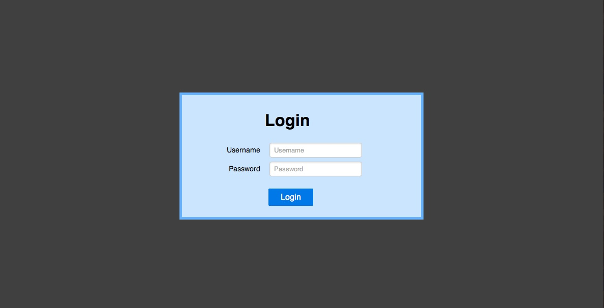

How to use Good Morning!
When you are logged into Good Morning!, you will be taken to a settings page where you input certain information. This application will combine the important details of your day!
About Good Morning!
Good Morning! was created by Dorit Rein, Victoria Greene, Jason Luo and Raymond Lam. It was intended to help frazzled morning people plan out and organize their mornings, and if they so desire, their entire days. We used the Pure CSS library, and APIS from (RAYMOND FILL THIS OUT).


To login click here or click the login button in the sidebar. To register click here or click the register button in the sidebar.